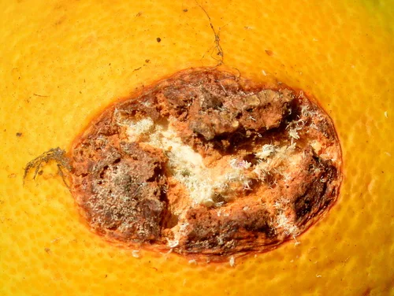

果实的问题

果面出现黑褐色斑纹比较斑纹位置、是否凹陷，以及同株其他果实的情况。

果实变软腐烂检查软化是否从裂口、果柄或接触地面处开始。

果实畸形看畸形是否集中在果实一侧，同时记录开花期间的天气和叶片变化。

果实干枯观察果柄和相邻枝叶是否也失水，以及果实先变软还是先皱缩。

果皮出现霉层查看霉层下的组织是否软化，果实间是否拥挤或有碰伤。

果面有白色粉状覆盖物留意粉层分布及同株叶片，区分品种天然果粉与新出现的不均匀白斑。

番茄幼果底部发黑、变硬第一穗幼果若从花痕处开始发黑，可结合斑块位置与近期浇水情况，判断是否符合脐腐。

番茄果面长出不对称突起和疤痕花痕周围长出大小不同的果瓣时，留意异常最早何时出现，以及同穗其他果实是否正常。

苹果上的蛀道通向种子苹果表面的褐色碎屑可能掩盖小蛀孔，用一个落果沿通道切开，查看种子是否也受害。

李子幼果变长，剖开没有果核个别幼李长得格外快，里面却可能几乎全空。在果实还没干瘪时观察，最容易发现缺失的果核。

桃子褐斑上冒出黄褐色绒垫成熟中的桃子可从小伤口附近变软，继而长出许多浅褐色小绒垫；贴着它的邻果也值得检查。

苹果的橄榄色斑逐渐变为硬痂黑星病会在苹果上留下粗糙疤痕，果实长大后甚至开裂；同株叶片上的症状有助于判断老果斑的来源。

葡萄果粒出现浅心深边的凹斑果粒凹斑中心与边缘反差明显，形似鸟眼；还可以在绿色嫩梢上找相关症状。

山楂果实密生橙色管状突起山楂锈果上会长出橙色粉末和微小管状体，其形状和着生位置有助于与表面虫卵区分。

苹果果皮上有弯曲的带状疤痕幼果时期的一条浅蛀道，可随苹果生长变成宽大的木栓状带纹。较小的果实上也许还能找到近期受害的线索。

幼梨异常膨大后发黑落花后个别幼梨异常膨大，可能藏有瘿蚊幼虫。剖开查看比只观察外形更容易辨认。

桤木果序伸出红色舌状物桤木球果状果序伸出的红色薄片可能是真菌瘿。拍照时应特别保留舌状体与鳞片的连接处。

伞形科植物的果序中出现膨大果粒在正常伞形果序中，个别膨大果粒十分显眼。先数一数异常果粒，确认寄主，再辨认果瘿种类。

苹果表皮出现干燥的铜褐色锈纹铜褐色粗糙表皮既可能是品种特点，也可能与幼果时期的环境有关。应结合纹理、分布和品种判断。

蔓越莓果内出现白色棉絮状组织转色不良的蔓越莓内可能出现白色絮状物，观察切面时还应参考同一片植株春季是否有梢枯。

玉米穗上膨大的灰白瘤玉米个别籽粒或部分穗体膨大，变成形状不规则的灰白囊状物。

山杨果序中个别蒴果膨大变黄山杨或灰杨的下垂果序中，个别蒴果可能明显膨大并变为鲜黄色；有时只发生在几枚小果上，有时能累及大半条果序。

苹果表面有成簇的针尖状黑点苹果原本平滑的果皮上，有时会出现像撒了胡椒一样的黑点。先看它们的排列及下面的果皮，再判断是否存在虫害。

柑橘果皮长出隆起的木栓状斑橙或酸橙果皮出现隆起褐斑时，可查看较新斑点边缘是否有水渍感或黄晕。这组表现可提示柑橘溃疡病。

转色柑橘果皮出现边界清楚的深色斑柑橘转色时检查果面。细小深色斑点和边界清楚的较大硬斑可能同时存在。如果多个果实均有相似表现，可将柑橘黑斑病列入排查范围。